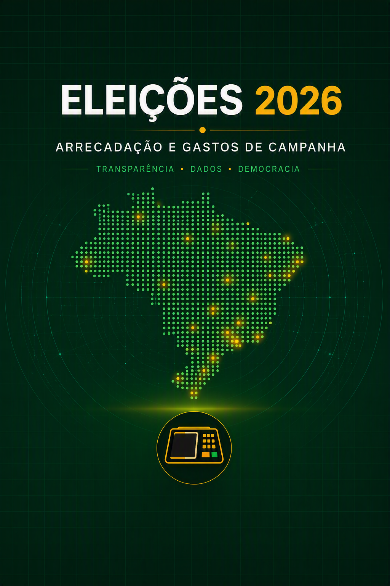
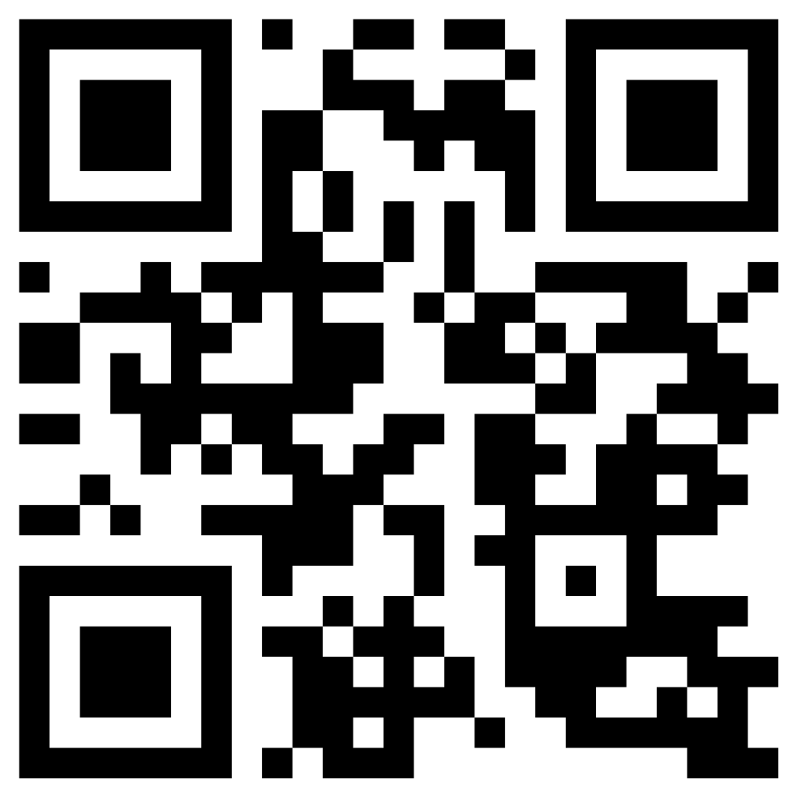

Portfólio
Projetos em destaque
Casos reais de análise, limpeza e visualização de dados — do problema ao resultado.
01

Dados Públicos · Storytelling
Eleições 2026 — Gastos de Campanha
Painel interativo que revela quanto cada candidato arrecadou e em que gastou, a partir dos 27 CSVs brutos do TSE.
02

Power BI · Dashboard
Painel Saúde Caixa
Uma análise comparativa entre o Saúde Caixa e os gigantes da autogestão para diagnosticar: o rombo financeiro atual é uma tendência sistêmica do setor ou uma anomalia exclusiva da operadora?.
Acessar painel →

Dados Públicos · Storytelling
Estudo Saúde Caixa
Uma análise comparativa entre o Saúde Caixa e os gigantes da autogestão para diagnosticar: o rombo financeiro atual é uma tendência sistêmica do setor ou uma anomalia exclusiva da operadora?
03
🖼️
>> COLOQUE AQUI A CATEGORIA <<
>> ANÁLISE EM CONSTRUÇÃO <<
>> ANÁLISE EM PROCESSAMENTO <<
>> Texto do botão <<